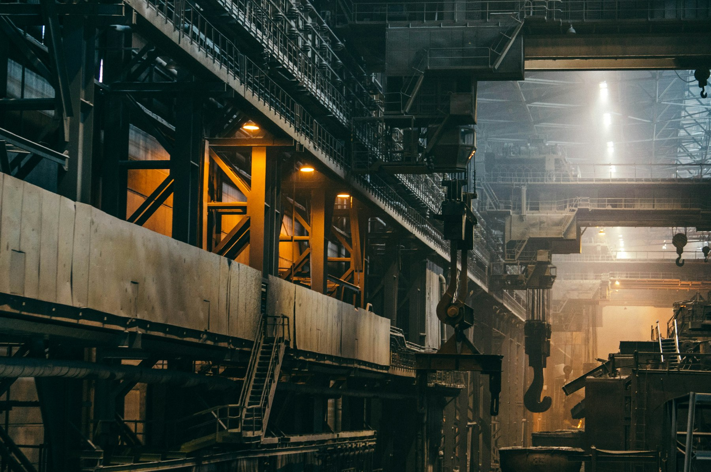

1998년 설립
정밀 가공의 경험을 축적하며 현재의 생산 기반으로 이어왔습니다.
COMPANY / FOUNDATION
1998 — PRESENT너울정밀은 인천 남동공단에서 CNC 정밀 가공, 자동차 부품 시제품, 소량 다품종 양산에 대응해 왔습니다.

COMPANY ASSEMBLY
정밀 가공의 경험을 축적하며 현재의 생산 기반으로 이어왔습니다.
인천 남동공단을 기반으로 24명의 임직원이 가공 요청에 대응합니다.
밀링·선반 중심 정밀 가공, 자동차 부품 시제품, 소량 다품종 양산에 대응합니다.
머시닝센터 6대, CNC 선반 4대, 와이어 방전기 2대와 측정 설비를 보유합니다.
설비 상세 확인 →TRUST RECORD / CERTIFICATION
설립에서 품질경영 인증 취득까지, 확인 가능한 기록을 현재의 제조 기반과 함께 살펴봅니다.
인천 남동공단에서 정밀 가공의 기반을 시작했습니다.
2011년 품질경영시스템 인증을 취득했습니다.
2019년 자동차 산업 품질경영시스템 인증을 취득했습니다.
CONFIRMED벤처기업 확인
DESIGNATED뿌리기술 전문기업 지정
DELIVERY EXPERIENCE
자동차·의료기기·항공 분야의 납품 경험을 갖추고 있습니다. 계약상 거래처 사명은 공개하지 않습니다.
자동차 산업의 시제품 제작 요청과 정밀 가공에 대응해 온 납품 기반입니다.